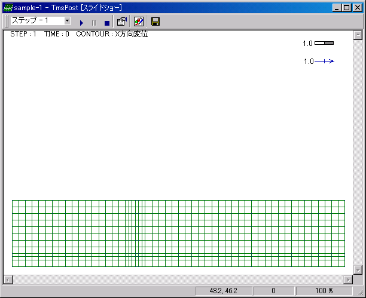
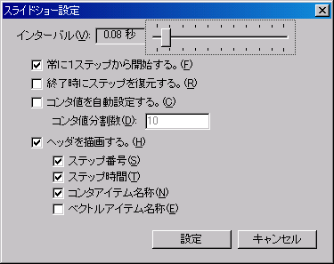
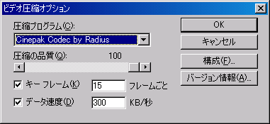
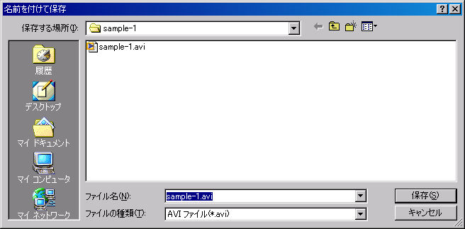

スライドショーの操作や設定はツールバーのメニューで行います。
| メニュー | 説明 | |
|---|---|---|
| [再開] | スライドショーを開始します。 | |
| [停止] | スライドショーを停止します。 | |
 |
[スライドショーの終了] | スライドショーを終了し、メイン画面に戻ります。 |
| [設定] | 表示速度などの各種スライドショーの設定を行います。 | |
| [圧縮オプション] | AVIファイル保存時の圧縮オプションを設定します。 | |
 |
[エクスポート] | スライドショーをAVIファイル（動画ファイル）に保存します。 |
メイン画面メニューの[ツール]−[スライドショー]を選択すると、スライドショー（コンタ図のアニメーション機能）を表示することができます。
ツールバーの＜再開＞ボタンをクリックするとスライドショーが開始されます。＜停止＞ボタンをクリックするとスライドショーが停止します。 スライドショー停止中には＜ステップ＞ボタンをクリックし、任意のステップのコンタ図を表示できます。

スライドショーの操作や設定はツールバーのメニューで行います。
メニュー 説明 [再開] スライドショーを開始します。 [停止] スライドショーを停止します。 [スライドショーの終了] スライドショーを終了し、メイン画面に戻ります。 [設定] 表示速度などの各種スライドショーの設定を行います。 [圧縮オプション] AVIファイル保存時の圧縮オプションを設定します。 [エクスポート] スライドショーをAVIファイル（動画ファイル）に保存します。
＜設定＞ボタンをクリックするとスライドショー設定画面が表示されます。スライドショーの表示速度と表示する内容の設定を行うことができます。

＜圧縮オプション＞ボタンをクリックするとAVIファイル圧縮オプション設定画面が表示されます。圧縮オプションを指定します。
圧縮プログラムの選択と圧縮の品質の設定を行うことができます。
＜エクスポート＞ボタンをクリックするとファイル保存ダイアログボックスが表示されます。
ファイル名をつけてAVIファイルの保存を行います。